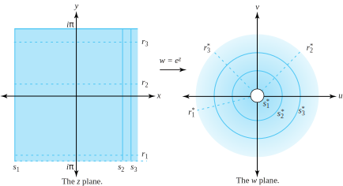
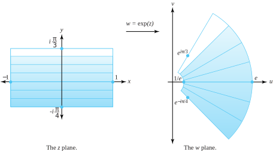

Recall that the real exponential function can be represented by the power series \(e^x=\sum\limits_{n=0}^{\infty}\frac{1}{n!}x^n\text{.}\) Thus it is only natural to define the complex exponential \(e^z\text{,}\) also written as \(\exp(z)\text{,}\)in the following way.
Clearly, this definition agrees with that of the real exponential function when \(z\) is a real number. We now show that this complex exponential has two of the key properties associated with its real counterpart and verify the identity \(e^{i\theta}=\cos \theta +i\sin \theta\text{,}\) which, back in Chapter 1 (see Identity (1.4.6) of Section 1.4) we promised to establish.
Theorem5.1.2.
The function \(\exp z\) is an entire function satisfying the following conditions.
i.
\(\exp\,'(z)=\exp(z)=e^z\) (using Leibniz notation we write \(\frac{d}{dz}e^z=e^z\)).
Using the product rule, chain rule, and part (i), we have
\begin{equation*}
g\,'(z) =\exp(z) \exp(\zeta -z) + \exp(z)[-\exp(\zeta -z)] =0 \text{ for all } z\text{.}
\end{equation*}
According to Theorem 3.2.13, this result implies that the function \(g\) must be constant. Thus, for all \(z\text{,}\)\(g(z)=g(0)\text{.}\) Since \(\exp(0)=1\) (verify!), we deduce
To prove part (iii), we let \(\theta\) be a real number. By Definition 5.1.1,
\begin{align*}
e^{i\theta} \amp = \exp(i\theta )\\
\amp = \sum_{n=0}^{\infty}\frac{1}{n!}(i\theta)^n\\
\amp = \sum_{n=0}^{\infty}\left[\frac{1}{(2n)!} (i\theta)^{2n}+\frac{1}{(2n+1)!}(i\theta)^{2n+1}\right] {\text{ (separating odd and even exponents) } }\\
\amp = \sum_{n=0}^{\infty}\left[\frac{1}{(2n)!}(i^2)^n\theta^{2n} + \frac{1}{(2n+1)!}i(i^2 )^n\theta^{2n+1}\right]\\
\amp = \sum_{n=0}^{\infty}(-1)^n \frac{\theta^{2n}}{(2n)!} + i\sum_{n=0}^{\infty}(-1)^n\frac{\theta^{2n+1}}{(2n+1)!}\\
\amp = \cos \theta +i\sin \theta {\text{ (by the series representations for the real-valued sine and cosine) } }\text{.}
\end{align*}
Note that parts (ii) and (iii) of the Theorem 5.1.2 combine to verify DeMoivre’s formula, which we introduced in Section 1.5—see Identity (1.5.2). Further, if \(z=x+iy\text{,}\) we have
Some texts start with Identity (5.1.1) as the definition for \(\exp(z)\text{.}\) In the exercises, we show that this is a natural approach from the standpoint of differential equations.
The notation \(\exp(z)\) is preferred over \(e^z\) in some situations. For example, the number \(\exp(\frac{{1}}{5}) =1.22140275816017\ldots\) is the value of \(\exp(z)\) when \(z=\frac{{1}}{5}\) and equals the positive fifth root of \(e=2.71828182845904\ldots\text{.}\) The notation \(e^{\frac{{1}}{5}}\text{,}\) however, is ambiguous and might be interpreted as any of the complex fifth roots of the number \(e\) that we discussed in Section 1.5:
To prevent confusion, we often use \(\exp(z)\) to denote the single-valued exponential function.
We now explore some additional properties of \(\exp(z)\text{.}\) Using Identity (5.1.1) it follows that
\begin{align}
e^{z+i2n\pi} \amp =e^z, \amp \amp \text{ for all } z\text{ , provided } n\text{ is an integer } ,\tag{5.1.2}\\
e^z \amp =1, \amp \amp \text{ iff } z=i2n\pi \text{ , where } n\text{ is an integer, and }\tag{5.1.3}\\
e^{z_1} \amp =e^{z_2}, \amp \amp \text{ iff } z_2=z_1+i2n\pi \text{ for some integer } n\text{.}\tag{5.1.4}
\end{align}
For example, because Identity (5.1.1) involves the periodic functions \(\cos y\) and \(\sin y\text{,}\) any two points in the \(z\) plane that lie on the same vertical line with their imaginary parts differing by an integral multiple of \(2\pi\) are mapped onto the same point in the \(w\) plane. Thus the complex exponential function is periodic with period \(2\pi i\text{,}\) which establishes Equation (5.1.2). We leave the verification of Equations (5.1.3) and (5.1.4) as exercises.
Figure5.1.4.The points \(\{z_n\}\) in the \(z\) plane (i.e., the \(xy\) plane) and their image \(w_0=\exp(z_n)\) in the \(w\) plane (i.e., the \(uv\) plane)
Let’s look at the range of the exponential function. If \(z=x+iy\text{,}\) we see from Identity (5.1.1)—\(e^z=e^xe^{iy}=e^x( \cos y+i\sin y)\)—that \(e^z\) can never equal zero, as \(e^x\) is never zero, and the cosine and sine functions are never zero at the same point. Suppose, then, that \(w=e^z \ne 0\text{.}\) If we write \(w\) in its exponential form as \(w=\rho e^{i\phi }\text{,}\) Identity (5.1.1) gives
where \(n\) is an integer. Thus for any complex number \(w \ne 0\text{,}\) there are infinitely many complex numbers \(z=x+iy\) such that \(w=e^z\text{.}\) From Equations (5.1.8), the numbers \(z\) are
\begin{equation*}
\exp\big[|w| +i(\mathrm{Arg}\,w+2n\pi)\big] = w
\end{equation*}
In summary, the transformation \(w=e^z\) maps the complex plane (infinitely often) onto the set of nonzero complex numbers.
If we restrict the solutions to Equation (5.1.9) so that only the principal value of the argument, \(-\pi \lt \mathrm{Arg}\,w \le \pi\text{,}\) is used, the transformation \(w=e^z=e^{x+iy}\) maps the horizontal strip \(\{(x,y):-\pi \lt y \le \pi \}\) one-to-one and onto the range set \(S=\{w:w \ne 0\}\text{.}\) This strip is called the fundamental period strip and is shown in Figure 5.1.5.

Figure5.1.5.The fundamental period strip for the mapping \(w=\exp(z)\)
The horizontal line \(z=t+ib\text{,}\) for \(-\infty \lt t\lt \infty\) in the \(z\) plane, is mapped onto the ray \(w=e^te^{ib}=e^t(\cos b+i\sin b)\) that is inclined at an angle \(\phi =b\) in the \(w\) plane. The vertical segment \(z=a+i\theta\text{,}\) for \(-\pi \lt \theta \le \pi\) in the \(z\) plane, is mapped onto the circle centered at the origin with radius \(e^{a}\) in the \(w\) plane. That is, \(w=e^{a}e^{i\theta }=e^{a}(\cos \theta +i\sin \theta )\text{.}\) The lines \(r_1\text{,}\)\(r_2\text{,}\) and \(r_3\text{,}\) are mapped to the rays \(r_1^*\text{,}\)\(r_2^*\text{,}\) and \(r_3^*\text{,}\) respectively. Likewise, the segments \(s_1\text{,}\)\(s_2\text{,}\) and \(s_3\) are mapped to the corresponding circles \(s_1^*\text{,}\)\(s_2^*\text{,}\) and \(s_3^*\text{.}\)
Consider a rectangle \(R=\{(x,y) : a \le x \le b\text{ and } c \le y \le d\}\text{,}\) where \(-\pi \lt c\lt d \le \pi\text{.}\) Show that the transformation \(w=e^z=e^{x+iy}\) maps \(R\) onto a portion of an annular region bounded by two rays.
which is a portion of the annulus \(\{\rho e^{i\phi }:e^a \le \rho \le e^b\}\) in the \(w\) plane subtended by the rays \(\phi =c\) and \(\phi =d\text{.}\) In Figure 5.1.7, we show the image of the rectangle
\begin{equation*}
R = \left\{(x,y) :-1 \le x \le 1\text{ and } -\frac{\pi}{4} \le y \le \frac{\pi}{3}\right\}
\end{equation*}

Figure5.1.7.The image of \(R\) under the transformation \(w=\exp(z)\)
ExercisesExercises
1.
Using Definition 5.1.1, explain why \(\exp (0) =e^{0}=1\text{.}\)
Recall that \(\sum\limits_{n=0}^{\infty}c_nz^n\) is compact notation for \(c_0+\sum\limits_{n=1}^{\infty}c_nz^n\text{,}\) and that \(0!=1\text{.}\) Then, by definition, \(\exp (0) = \sum\limits_{n=0}^{\infty}\frac{1}{n!}0^n=\frac{1}{0!} + \sum\limits_{n=1}^{\infty}\frac{1}{n!}0^n=1\text{.}\)
2.
The questions for this problem relate to Figure 5.2. The shaded portion in the \(w\) plane indicates the image of the shaded portion in the \(z\) plane, with the lighter shading indicating expansion of the area of corresponding regions.
(a)
Why is there no shading inside the circle \(s_1^*\text{?}\)
(b)
Explain why the images of \(r_1\text{,}\)\(r_2\text{,}\) and \(r_3\) appear to make, respectively, angles of \(-\frac{7\pi}{8}\text{,}\)\(\frac{\pi}{4}\text{,}\) and \(\frac{3\pi}{4}\) radians with the positive \(u\) axis.
(c)
Precisely where should the images of the points \(\pm i\pi\) be located?
Let \(n\) be an integer, and set \(z=i2n\pi\text{.}\) Then \(e^{i2n\pi}=\cos (2n\pi ) +i\sin (2n\pi ) =1\text{.}\) Conversely, suppose \(e^{z}=e^{x+iy}=1\text{.}\) Then \(e^xe^{iy}=e^x(\cos y+i\sin y) =1+0i\text{.}\) This implies \(\sin y=0\text{.}\) Because \(e^x\) is always positive and \(e^x\cos y=1, \; y=2n\pi\) for some integer \(n\text{.}\) This result forces \(x=0\text{,}\) so \(z=x+iy=0+i2n\pi\text{,}\) establishing Equation (5.1.3). Equation (5.1.4) comes from observing that \(e^{z_1}=e^{z_2}\) iff \(e^{z_1-z_2}=1\text{,}\) and then appealing to Equation (5.1.3).
4.
Express \(e^z\) in the form \(u+iv\) for the following values of \(z\text{.}\)
(a)
\(-\frac{\pi}{3}\text{.}\)
(b)
\(\frac{1}{2}-i\frac{\pi}{4}\text{.}\)
(c)
\(-4+5i\text{.}\)
(d)
\(-1+i\frac{3\pi}{2}\text{.}\)
(e)
\(1+i\frac{5\pi}{4}\text{.}\)
(f)
\(\frac{\pi}{3}-2i\text{.}\)
5.
Find all values of \(z\) for which the following equations hold. \label {5.1.5}
Using properties of the exponential function, \(e^z=-4\) iff \(z=x+iy\) with \(y=(2n+1)\pi\) where \(n\) is an integer, and \(e^x=4\text{.}\) Thus, \(x=\ln 4\text{,}\) and \(z=\ln 4+i(2n+1) \pi\text{,}\) where \(n\) is an integer.
\(\exp(\bar{z}) = \sum\limits_{n=0}^{\infty}\frac{1}{n!}(\bar{z})^n = \lim\limits_{k \to \infty}\left(\sum\limits_{n=0}^k\frac{1}{ n!}(\bar{z})^n\right) = \lim\limits_{k\to \infty }\left(\overline{\sum\limits_{n=0}^k\frac{1}{n!}z^n}\right) = \overline{\left(\lim\limits_{k\to \infty }\sum\limits_{n=0}^k\frac{1}{n!}z^n\right)}\text{,}\) because the conjugate is a continuous function (explain). This last quantity, of course, equals \(\overline{\exp(z)}\text{.}\)
(b)
\(\exp(\overline{z})\) is nowhere analytic.
10.
Show that \(|e^{-z}| \lt 1\) iff \(\mathrm{Re}(z) >0\text{.}\)
Show that \(f(z)=ze^z\) is analytic for all \(z\) by showing that its real and imaginary parts satisfy the Cauchy-Riemann sufficient conditions for differentiability.
\(\sum\limits_{n=0}^{\infty}e^{inz} = \sum\limits_{n=0}^{\infty}(e^{iz})^n\text{.}\) This is a geometric series. Show that \(\mathrm{Im}(z)>0\) implies \(|e^{iz}|=|e^{i(x+iy)}|\lt 1\text{,}\) so that the series converges by Theorem 4.3.1.
16.
Generalize Example 5.1.3, where the condition \(-\pi \lt c\lt d \le \pi\) is replaced by \(d-c\lt 2\pi\text{.}\) Illustrate what this means.
17.
Use the fact that \(\exp(z^2)\) is analytic to show that \(e^{x^2-y^2}\sin 2xy\) is a harmonic function.
Show that \(e^{x^2-y^2}\sin 2xy\) is the imaginary part of \(\exp (z^2)\text{,}\) and therefore harmonic by Theorem 3.3.1.
18.
Show the following concerning the exponential map.
(a)
The image of the line \(\{(x,y) :x=t, \; y=2\pi+t\}\text{,}\) where \(-\infty \lt t\lt \infty\) is a spiral.
(b)
The image of the first quadrant\(\{(x,y):x>0, \; y>0\}\) is the region \(\{w:|w| > 1\}\text{.}\)
(c)
If \(a\) is a real constant, the horizontal strip \(\{(x,y) :\alpha \lt y \le \alpha +2\pi \}\) is mapped one-to-one and onto the nonzero complex numbers.
(d)
The image of the vertical line segment \(\{(x,y):
x=2, \; y=t\}\text{,}\) where \(\frac{\pi}{6} \lt t \lt \frac{7\pi}{6}\) is half a circle.
(e)
The image of the horizontal ray \(\{(x,y) :x>0, \; y= \frac{\pi}{3}\}\) is a ray.
19.
Explain how the complex function \(e^z\) and the real function \(e^x\) are different. How are they similar?
20.
Many texts give an alternative definition for \(\exp(z)\text{,}\) starting with Identity (5.1.1) as the definition for \(f(z)=\exp(z)\text{.}\) Recall that this identity states that \(\exp(z)=\exp(x+iy)=e^x(\cos y+i\sin y)\text{.}\) This exercise shows such a definition is a natural approach in terms of differential equations. We start by requiring \(f(z)\) to be the solution to an initial-value problem satisfying three conditions: (1) \(f\) is entire, (2) \(f\,'(z)=f(z)\) for all \(z\text{,}\) and (3) \(f(0)=1\text{.}\) Suppose that \(f(z)=f(x+iy)=u(x,y)+iv(x,y)\) satisfies conditions (1), (2), and (3).
(a)
Use the result \(f\,'(z) =u_x(x,y)+iv_x(x,y)\) and the requirement \(f\,'(z)=f(z)\) from condition (2) to show that \(u_x(x,y) - u(x,y)=0\text{,}\) for all \(z=(x,y)\text{.}\)
(b)
Show that the result in part (a) implies that \(\frac{\partial }{\partial x}[u(x,y) e^{-x}] =0\text{.}\) This means \(u(x,y)e^{-x}\) is constant with respect to \(x\text{,}\) so \(u(x,y)e^{-x}=p(y)\text{,}\) where \(p(y)\) is a function of \(y\) alone.
(c)
Using a similar procedure for \(v(x,y)\text{,}\) show we wind up getting a pair of solutions \(u(x,y)=p(y)e^x\text{,}\) and \(v(x,y)=q(y)e^x\) where \(p(y)\) and \(q(y)\) are functions of \(y\) alone.
(d)
Now use the Cauchy-Riemann equations to conclude from part (c) that \(p(y) =q\,'(y)\) and \(p\,'(y)=-q(y)\text{.}\)
(e)
Use part (d) to show that \(p\,''(y) + p(y) =0\) and \(q\,''(y) + q(y) = 0\text{.}\)
(f)
Identify the general solutions to part (e). Then, given the initial conditions
\(f(0) =f(0+0i)=u(0,0)+iv(0,0)=1+0i\text{,}\)
find the particular solutions and conclude that Identity (5.1.1) follows.